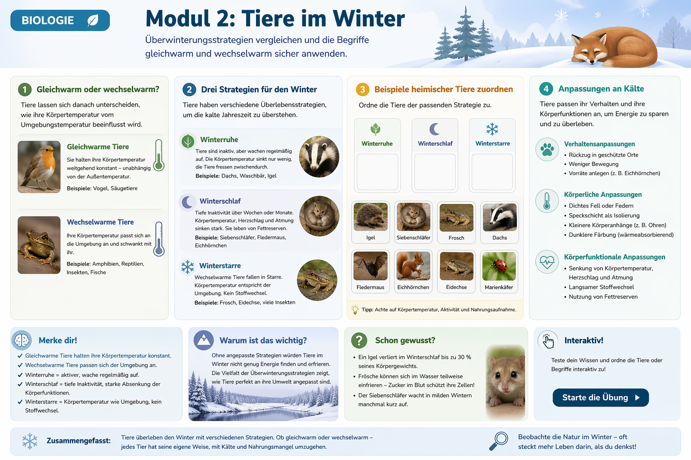

In diesem Modul vergleichst du Ueberwinterungsstrategien und wendest die Begriffe
gleichwarm und wechselwarm sicher an.

Lehrplanbezug Niedersachsen
Das Modul greift die Inhalte des Kerncurriculums Naturwissenschaften in Jahrgang 5 auf:
gleichwarm und wechselwarm unterscheiden, Ueberwinterungsstrategien vergleichen und
Anpassungen an Kaelte erklaeren.